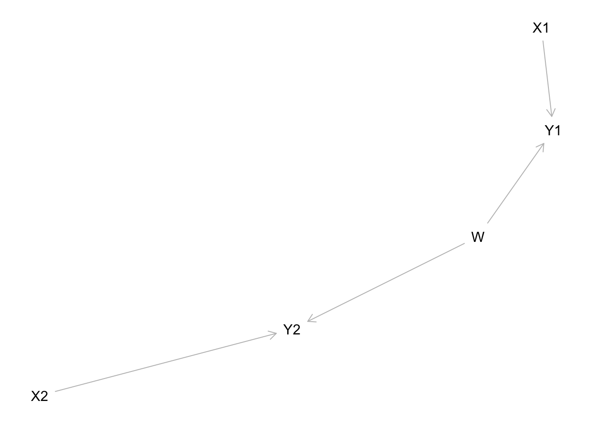
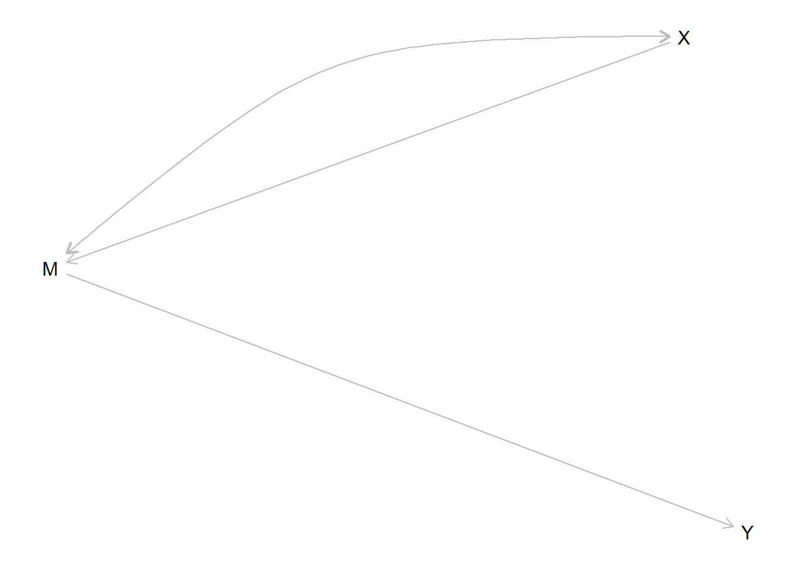
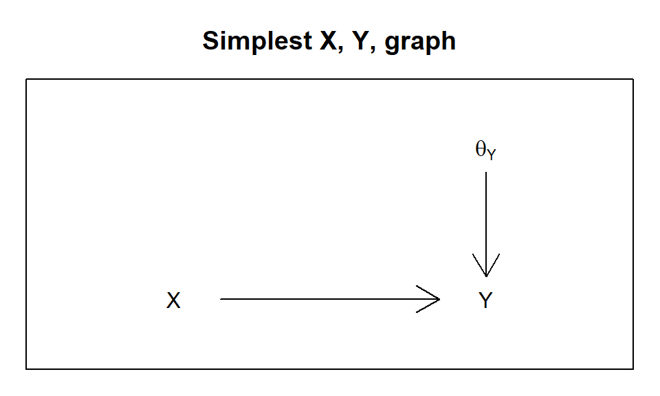
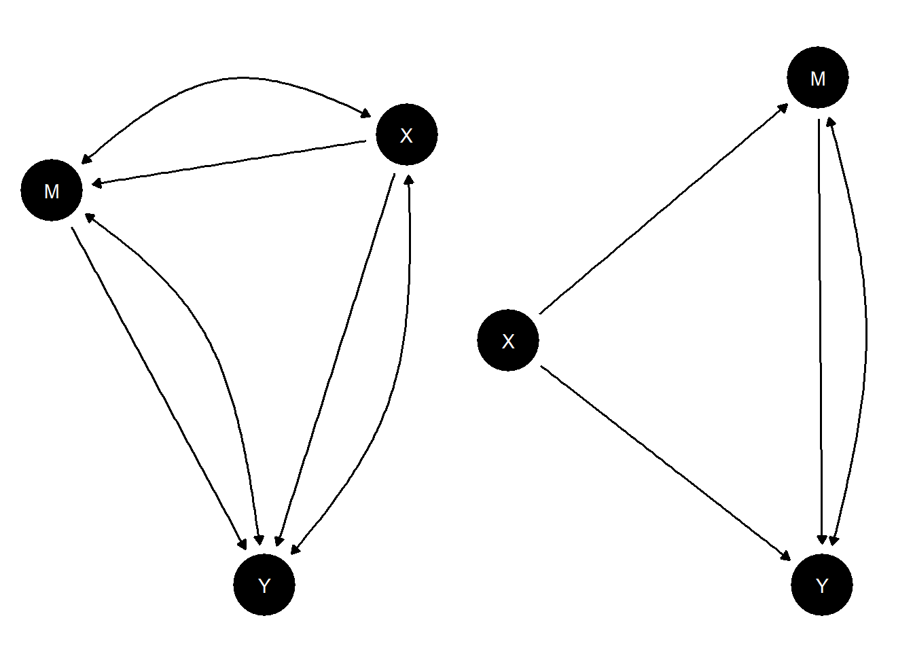
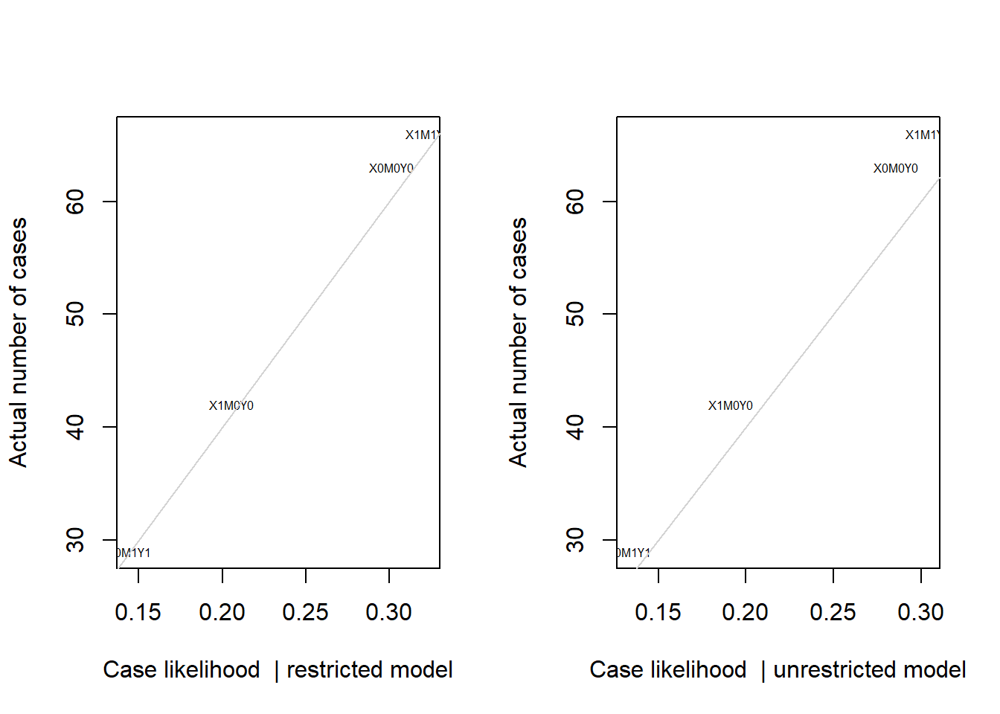
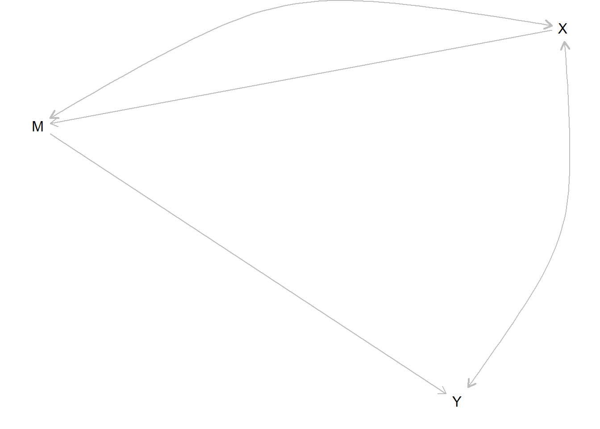

Chapter 17 Analysis of canonical models with gbiqq
We walk through a set of canonical models and show how to define and analyze them using gbiqq.
17.1 A simple model and the ladder of causation
We first introduce a simple \(X\) causes \(Y\) model with no confounding and use this to illustrate the “ladder of causation.”
The model is written:
model <- make_model("X -> Y")
plot_dag(model)We will assume a “true” distribution over parameters. Let’s assume that the true effect of 0.5, but that this is not known to researchers. The .5 effect comes from the difference between the share of units with a positive effect (.6) and those with a negative effect (.1). (We say share but we may as well think in terms of the probability that a given unit is of one or other type.)
model <- set_parameters(model, c(.5, .5, .2, .1, .6, .1))
kable(t(model$parameters))| X.X0 | X.X1 | Y.Y00 | Y.Y10 | Y.Y01 | Y.Y11 |
|---|---|---|---|---|---|
| 0.5 | 0.5 | 0.2 | 0.1 | 0.6 | 0.1 |
We can now simulate data using the model:
data <- simulate_data(model, n = 1000)With a model and data in hand we can now update the model.
updated <- gbiqq(model, data)From the updated model we can draw posterior inferences over estimands of interest.
We will imagine three estimands, corresponding to Pearl’s “ladder of causation.”
At the first level we are interested in the distribution of some node, perhaps given the value of another node. This question is answerable from observational data.
At the second level we are interested in treatment effects: how changing one node changes another. This question is answerable from experimental data.
At the third level we are interested in counterfactual statements: how would things have been different if some features of the world were different from what they are? Answering this question requires a causal model.
Here are the results:
results <- gbiqq::query_model(
updated,
queries = list("Y | X=1" = "Y",
ATE = "Y[X=1] - Y[X=0]",
PC = "Y[X=1] > Y[X=0]"),
subsets = c(TRUE, TRUE, "X==1 & Y==1"),
using = "posteriors")| Query (rung) | Query | Subset | Using | mean | sd |
|---|---|---|---|---|---|
| Association | Y | X=1 | All | posteriors | 0.48 | 0.02 |
| Intervention | ATE | All | posteriors | 0.53 | 0.03 |
| Imagining | PC | X==1 & Y==1 | posteriors | 0.86 | 0.08 |
We see from the posterior variance on PC that we have the greatest difficulty with the third rung. In particular the PC is not identified (the distribution does not tighten even with very large N). For more intuition we graph the posteriors:

We find that they do not converge but they do place positive mass in the right range. Within this range, the shape of the posterior depends on the priors only.
17.2 \(X\) causes \(Y\), with unmodelled confounding
An \(X\) causes \(Y\) model with confounding can be written:
model <- make_model("X -> Y") %>%
set_confound(list(X = "(Y[X=1]>Y[X=0])", X = "(Y[X=1]<Y[X=0])", X = "(Y[X=1] ==1)"))
plot_dag(model)
If we look at the parameter matrix implied by this model we see that it has more parameters than nodal types, reflecting the conditional assignment probabilities of \(X\) – \(X\) can have different assignment probabilities for different nodal types for \(Y\).
| X0.Y00 | X1.Y00 | X0.Y10 | X1.Y10 | X0.Y01 | X1.Y01 | X0.Y11 | X1.Y11 | |
|---|---|---|---|---|---|---|---|---|
| X0 | 0 | 0 | 0 | 0 | 0 | 0 | 1 | 0 |
| X1 | 0 | 0 | 0 | 0 | 0 | 0 | 0 | 1 |
| X0 | 0 | 0 | 1 | 0 | 0 | 0 | 0 | 0 |
| X1 | 0 | 0 | 0 | 1 | 0 | 0 | 0 | 0 |
| X0 | 0 | 0 | 0 | 0 | 1 | 0 | 0 | 0 |
| X1 | 0 | 0 | 0 | 0 | 0 | 1 | 0 | 0 |
| X0 | 1 | 0 | 0 | 0 | 0 | 0 | 0 | 0 |
| X1 | 0 | 1 | 0 | 0 | 0 | 0 | 0 | 0 |
| Y00 | 1 | 1 | 0 | 0 | 0 | 0 | 0 | 0 |
| Y10 | 0 | 0 | 1 | 1 | 0 | 0 | 0 | 0 |
| Y01 | 0 | 0 | 0 | 0 | 1 | 1 | 0 | 0 |
| Y11 | 0 | 0 | 0 | 0 | 0 | 0 | 1 | 1 |
With the possibility of any type of confounding, the best we can do is place “Manski bounds” on the average causal effect.
To see this, let’s plot a histogram of our posterior on average causal effects, given lots of data:
data <- simulate_data(
model, n = 1000,
parameters = c(.5, .5, .5, .5, .5, .5, .5, .5, .1, .1, .7, .1))updated <- gbiqq(model, data, refresh = 0)## Prior distribution added to model
The key thing here is that the posterior on the ATE has shifted, as it should, but it is not tight, even with large data. In fact the distribution of the posterior covers one unit of the range between -1 and 1.
17.3 An \(X\) causes \(Y\), with confounding modeled
Say now we have a theory that the relationship between \(X\) and \(Y\) is confounded by possibly unobserved variable \(C\). Although \(C\) is unobserved we can still include it in the model and observe the confounding it generates by estimating the model on data generated by the model but assuming that we cannot observe \(C\).
model <- make_model("C -> X -> Y <- C") %>%
set_restrictions(c(
"(Y[X=1] < Y[X=0]) | (Y[C=1] < Y[C=0])",
"(X[C=1] < X[C=0])")) %>%
set_parameters(type = "prior_mean") The ATE estimand in this case is given by:
| Query | Subset | Using | mean |
|---|---|---|---|
| ATE | All | parameters | 0.333 |
In the first column below we run a regression using data generated from this model but with \(C\) unobserved. The second column shows what we would estimate if were able to observe \(C\).
| Dependent variable: | ||
| Y | ||
| (1) | (2) | |
| X | 0.443*** | 0.327*** |
| (0.009) | (0.009) | |
| C | 0.328*** | |
| (0.009) | ||
| Constant | 0.282*** | 0.176*** |
| (0.006) | (0.007) | |
| Observations | 10,000 | 10,000 |
| R2 | 0.196 | 0.290 |
| Adjusted R2 | 0.196 | 0.290 |
| Residual Std. Error | 0.448 (df = 9998) | 0.421 (df = 9997) |
| F Statistic | 2,438.465*** (df = 1; 9998) | 2,042.203*** (df = 2; 9997) |
| Note: | p<0.1; p<0.05; p<0.01 | |
Our posteriors over the effect of \(X\) on \(Y\) and the effect of the unobserved confounder (\(C\)) on \(Y\) have a joint distributed with negative covariance.
To illustrate we will use the same data but assume priors from model where we do not restrict the relationship between \(C\) and \(Y\) and show the joint distribution of our posteriors.
model <- make_model("C -> X -> Y <- C") %>%
set_restrictions("(X[C=1] < X[C=0])") ate <- read_rds("saved/appendix_modelled_confound_ate.rds")
confound <- read_rds("saved/appendix_modelled_confound_confound.rds")
plot(ate, confound)
abline(lm(confound~ate), col = "red")
17.4 Illustration of the backdoor criterion
We can use the same model to illustrate the backdoor criterion. We want to show that estimates of the treatment effect are identified if we have data on \(C\) but not otherwise.
model <- make_model("C -> X -> Y <- C") %>%
set_parameters(type = "prior_mean") %>%
set_restrictions("(Y[C=1]<Y[C=0])")
# Four types of data
N <- 10000
df_close_large <- simulate_data(model, n = N)
df_open_large <- mutate(data_1_large, C = NA)
df_close_small <- data_1_large[sample(N, 200), ]
df_open_small <- data_2_large[sample(N, 200), ]
We see that with small \(n\) (200 units), closing the backdoor (by including data on \(C\)) produces a tighter distribution on the ATE. With large \(N\) (10,000 units) the distribution around the estimand collapses when the backdoor is closed but not when it is open.
17.5 Simple mediation model
We define a simple mediation model and illustrate learning about whether \(X=1\) caused \(Y=1\) from observations of \(M\).
model <- make_model("X -> M -> Y") %>%
set_confound(confound = list(X = "M[X=1]==1")) %>%
set_parameters(c(.5, .5, .2, .8,
.2, 0, .8, 0,
.2, 0, .8, 0))plot_dag(model)
Data and estimation:
data <- simulate_data(model, n = 1000, using = "parameters")updated <- gbiqq(model, data)result <- gbiqq::query_model(
updated,
queries = list(COE = "c(Y[X=1] > Y[X=0])"),
subsets = c("X==1 & Y==1", "X==1 & Y==1 & M==0", "X==1 & Y==1 & M==1"),
using = "posteriors")| Query | Subset | Using | mean | sd |
|---|---|---|---|---|
| COE | X==1 & Y==1 | posteriors | 0.913 | 0.192 |
| COE | X==1 & Y==1 & M==0 | posteriors | 0.039 | 0.106 |
| COE | X==1 & Y==1 & M==1 | posteriors | 0.914 | 0.192 |
Note that observation of \(M=0\) results in a 0 probability for the posterior that \(X\) caused \(Y\), while observation of \(M=1\) has only a modest positive effect. The mediator thus provides a hoop test for the proposition that \(X\) caused \(Y\).
17.6 Simple moderator model
We define a simple model with a moderator and illustrate how updating about COE is possible using the value of a mediator as a clue.
model <- make_model("X -> Y; Z -> Y")
plot_dag(model)
data <- simulate_data(
model, n = 1000,
parameters = c(.5, .5, .5, .5,
.02, .02, .02, .02, .02, .02, .02, .02,
.02, .70, .02, .02, .02, .02, .02, .02))posterior <- gbiqq(model, data)result <- gbiqq::query_model(
updated,
queries = list(COE = "Y[X=1] > Y[X=0]"),
subsets = list("X==1 & Y==1", "X==1 & Y==1 & Z==0", "X==1 & Y==1 & Z==1"),
using = "posteriors")| Query | Subset | Using | mean | sd |
|---|---|---|---|---|
| COE | X==1 & Y==1 | posteriors | 0.795 | 0.044 |
| COE | X==1 & Y==1 & Z==0 | posteriors | 0.404 | 0.143 |
| COE | X==1 & Y==1 & Z==1 | posteriors | 0.883 | 0.037 |
As an exercise, define a model where, learning about a model with moderators allows you to tighten bounds on COE even without observing the value of the mediator.
17.7 Billy and Suzy’s moderator and mediation model
We can describe a simple version of the Billy and Suzy stone throwing game as a model with moderation and mediation in three nodes.
model <- make_model("Suzy -> Billy -> Smash <- Suzy") %>%
set_restrictions(c(
# If Suzy throws the bottle breaks
"(Smash[Suzy=1]==0)",
# The bottle won't break by itself
"(Smash[Billy=0, Suzy = 0]==1)",
# Suzy's throw doesn't *encourage* Billy to throw
"Billy[Suzy=1]>Billy[Suzy=0]"))
plot_dag(model)
Here “Suzy” means Suzy throws, “Billy”: means Billy throws—which he might not do if Suzy throws—and “Smash” means the bottle gets smashed. The version here is a somewhat less deterministic version of the classic account. Suzy is still an ace shot but now she may or may not throw and Billy may or may not respond positively to Suzy and if he does respond he may or may not be successful. With all these possibilities we have twelve unit causal types instead of 1.
We have two estimands of interest: counterfactual causation and actual causation. Conditional on Suzy throwing and the bottle breaking, would the bottle not have broken had Suzy not thrown her stone. That’s counterfactual causation. The actual causation asks the same question but conditioning on the fact that Billy did or did not thrown his stone—which we know could itself be due to Suzy throwing her stone. If so then we might think of an “active path” from Suzy’s throw to the smashing, even though had she not thrown the bottle would have smashed anyhow.
Our results:
actual_cause <- query_model(model, using = "priors",
queries = c(
Counterfactual = "Smash[Suzy = 1] > Smash[Suzy = 0]",
Actual = "Smash[Suzy = 1, Billy = Billy[Suzy = 1] ] >
Smash[Suzy = 0, Billy = Billy[Suzy = 1]]"),
subsets = c("Suzy==1 & Smash==1", "Suzy==1 & Smash==1 & Billy==0", "Suzy==1 & Smash==1 & Billy==1"),
expand_grid = TRUE
)| Query | Subset | Using | mean | sd |
|---|---|---|---|---|
| Counterfactual | Suzy==1 & Smash==1 | priors | 0.669 | 0.234 |
| Counterfactual | Suzy==1 & Smash==1 & Billy==0 | priors | 0.754 | 0.217 |
| Counterfactual | Suzy==1 & Smash==1 & Billy==1 | priors | 0.498 | 0.288 |
| Actual | Suzy==1 & Smash==1 | priors | 0.832 | 0.168 |
| Actual | Suzy==1 & Smash==1 & Billy==0 | priors | 1.000 | 0.000 |
| Actual | Suzy==1 & Smash==1 & Billy==1 | priors | 0.498 | 0.288 |
Our inferences, without even observing Billy’s throw distinguish between Suzy being a counterfactual cause and an actual cause. We think it likely that Suzy’s throw was an actual cause of the outcome though we are less sure that it was a counterfactual causes. Observing Billy’s throw strengthens our inferences. If Billy didn’t throw then we are sure Suzy’s throw was the actual cause, though we are still in doubt about whether her throw was a counterfactual cause.
Note that if we observed Suzy not throwing then we would learn more about whether she would be a counterfactual cause since we would have learned more about whether Billy reacts to her and also about whether Billy is a good shot.
| Query | Subset | Using | mean | sd |
|---|---|---|---|---|
| Counterfactual | Suzy==0 & Billy==0 | priors | 1.000 | 0.000 |
| Counterfactual | Suzy==0 & Billy==1 | priors | 0.497 | 0.288 |
| Counterfactual | Suzy==0 & Billy==1 & Smash==1 | priors | 0.000 | 0.000 |
| Actual | Suzy==0 & Billy==0 | priors | 1.000 | 0.000 |
| Actual | Suzy==0 & Billy==1 | priors | 0.751 | 0.221 |
| Actual | Suzy==0 & Billy==1 & Smash==1 | priors | 0.506 | 0.286 |
17.8 An IV model
We define a simple mediation model and illustrate learning about whether \(X=1\) caused \(Y=1\) from observations of \(M\).
model <- make_model("X -> M -> Y") %>%
set_confound(confound = list(M = "Y[M=1]==1"))
plot_dag(model)
result <- gbiqq::query_model(
updated,
queries = list(ATE = "c(Y[M=1] - Y[M=0])"),
subsets = list(TRUE, "M[X=1] > M[X=0]", "M==0", "M==1"),
using = "posteriors")| Query | Subset | Using | mean | sd |
|---|---|---|---|---|
| ATE | All | posteriors | 0.590 | 0.063 |
| ATE | M[X=1] > M[X=0] | posteriors | 0.592 | 0.071 |
| ATE | M==0 | posteriors | 0.571 | 0.120 |
| ATE | M==1 | posteriors | 0.607 | 0.036 |
We calculate the average causal effect for all and for the compliers and conditional on values of \(M\).
17.9 An illustration of identification through the frontdoor
Consider the following model:
frontdoor <- make_model("X -> M -> Y") %>%
set_confound(list(X = "Y[M=1]>Y[M=0]",
X = "Y[M=1]<Y[M=0]"))
plot_dag(frontdoor)
FLAG (fix confound arrows)
Below we plot posterior distributions given observations on 2000 units, with and without data on \(M\):
17.10 A model with a violation of sequential ignorability
17.11 Learning from a collider
Pearl describes a model similar to the following as a case for which controlling for covariate \(W\) induces bias in the estimation of the effect of \(X\) on \(Y\), which could otherwise be estimated without bias.
model <- make_model("X -> Y <- S; S -> W") %>%
set_confound(list(X = "W[S=1]>W[S=0]")) %>%
set_parameters(parameters = c(.1, .9,
.5, .5,
.9, .1,
.1,.1,.7,.1,
.2, 0,0,0, 0,0,0,0, .6,0,0,0, 0,0,0,.2))
plot_dag(model)
data <- simulate_data(model, n = 20000)
data$S <- NAThe true effect of \(X\) on \(Y\) is .3 but the PC is quite different for units with \(W=0\) and \(W=1\):
| Query | Subset | Using | mean |
|---|---|---|---|
| Y(1)-Y(0) | All | parameters | 0.300 |
| Y(1)-Y(0) | X==1 & Y==1 | parameters | 0.600 |
| Y(1)-Y(0) | X==1 & Y==1 & W==0 | parameters | 0.083 |
| Y(1)-Y(0) | X==1 & Y==1 & W==1 | parameters | 0.744 |
These are the quantities we seek to recover. The ATE can be gotten fairly precisely in a simple regression. But controlling for \(W\) introduces bias both for the unconditional and the conditional effects of \(X\):
| Dependent variable: | |||
| Y | |||
| (1) | (2) | (3) | |
| X | 0.298*** | 0.294*** | 0.028*** |
| (0.007) | (0.006) | (0.009) | |
| W | 0.374*** | 0.018* | |
| (0.006) | (0.010) | ||
| X:W | 0.537*** | ||
| (0.012) | |||
| Constant | 0.199*** | 0.016*** | 0.190*** |
| (0.006) | (0.006) | (0.007) | |
| Observations | 20,000 | 20,000 | 20,000 |
| R2 | 0.083 | 0.229 | 0.296 |
| Adjusted R2 | 0.083 | 0.229 | 0.296 |
| Residual Std. Error | 0.469 (df = 19998) | 0.430 (df = 19997) | 0.410 (df = 19996) |
| F Statistic | 1,806.657*** (df = 1; 19998) | 2,971.444*** (df = 2; 19997) | 2,807.135*** (df = 3; 19996) |
| Note: | p<0.1; p<0.05; p<0.01 | ||
How does the Bayesian model do, with and without data on \(W\)?
Inferences that do not use \(W\) get ATE right on average, but PC is not identified and statements about PC conditional on \(W\) are not possible:
Without \(W\):
| Query | Subset | Using | mean | sd |
|---|---|---|---|---|
| Y(1)-Y(0) | All | posteriors | 0.301 | 0.007 |
| Y(1)-Y(0) | X==1 & Y==1 | posteriors | 0.798 | 0.056 |
| Y(1)-Y(0) | X==1 & Y==1 & W==0 | posteriors | 0.792 | 0.066 |
| Y(1)-Y(0) | X==1 & Y==1 & W==1 | posteriors | 0.793 | 0.065 |
We see including the collider does not induce error in estimation of the ATE, even though it does in a regression framework. It provides an ability to make different PC case level claims given W, but these are nevertheless far off in this example because we still do not have identification.
With \(W\):
| Query | Subset | Using | mean | sd |
|---|---|---|---|---|
| Y(1)-Y(0) | All | posteriors | 0.302 | 0.006 |
| Y(1)-Y(0) | X==1 & Y==1 | posteriors | 0.792 | 0.039 |
| Y(1)-Y(0) | X==1 & Y==1 & W==0 | posteriors | 0.626 | 0.121 |
| Y(1)-Y(0) | X==1 & Y==1 & W==1 | posteriors | 0.839 | 0.039 |
17.12 Inferring a cause from symptoms
Sometimes we want to know whether a particular condition was present that could have caused an observed outcome. This is the stuff of medical diagnosis: on observing symptoms, is the sickness due to \(A\) or to \(B\)?
We imagine cases in which we do not get to observe the putative cause directly and we want to infer both whether the putative cause was present and whether it caused the outcome. This requires stating a query on both an effect and the level of an unobserved node.
An illustration:
model <- make_model("A -> S -> Y <- B") %>%
set_restrictions(c("(S[A=1]< S[A=0])",
"(Y[S=1]<Y[S=0])",
"(Y[S = 0, B = 0]== 1)"))
query_model(model,
queries = list(A="(Y[A=1] > Y[A =0]) & A==1", B="(Y[B=1] > Y[B =0]) & B==1"),
subsets = list("Y==1", "Y==1 & S==1"), using = "priors",
expand_grid = TRUE) %>% kable| Query | Subset | Using | mean | sd |
|---|---|---|---|---|
| A | Y==1 | priors | 0.199 | 0.204 |
| A | Y==1 & S==1 | priors | 0.255 | 0.231 |
| B | Y==1 | priors | 0.439 | 0.259 |
| B | Y==1 & S==1 | priors | 0.285 | 0.218 |
In this example there are two possible causes of interest, \(A\) and \(B\). With flat priors the \(B\) path starts as more probable. Observation of symptom \(S\), which is a consequence of \(A\), however raises the chances that the outcome is due to \(A\) and lowers the chances that it is due to \(B\).
17.13 A model mixing observational and experimental data
We imagine that node \(R\) indicates whether a unit was assigned to be randomly assigned to treatment assignment (\(X=Z\) if \(R=1\)) or took on its observational value (\(X=O\) if \(R=0\)). We assume the exclusion restriction that entering the experimental sample is not related to \(Y\) other than through assignment of \(X\).
model <- make_model("R -> X; O ->X; Z -> X; X -> Y",
add_priors = FALSE) %>%
set_restrictions("(X[R=1, Z=0]!=0) |
(X[R=1, Z=1]!=1) |
(X[R=0, O=0]!=0) |
(X[R=0, O=1]!=1)") %>%
set_priors() %>%
set_confound(list(O = "(Y[X=1] > Y[X=0])",
O = "(Y[X=1] < Y[X=0])",
O = "(Y[X=1] == 1)"))
plot_dag(model)The parameter matrix has just one type for \(X\) since \(X\) really operates here as a kind of switch, inheriting the value of \(Z\) or \(O\) depending on \(R\). Parameters allow for complete confounding between \(O\) and \(Y\) by \(Z\) and \(Y\) are unconfounded.
model <- set_parameters(model, c(.2, .8,
.8, .2,
.2, .8,
.8, .2,
.5, .5,
.5, .5,
1,
.2, .2, .4, .2))The estimands:
| Query | Subset | Using | mean |
|---|---|---|---|
| ATE | All | parameters | 0.2 |
| ATE | R==0 | parameters | 0.2 |
| ATE | R==1 | parameters | 0.2 |
The priors:
| Query | Subset | Using | mean | sd |
|---|---|---|---|---|
| ATE | All | priors | -0.003 | 0.31 |
| ATE | R==0 | priors | -0.003 | 0.31 |
| ATE | R==1 | priors | -0.003 | 0.31 |
Data:
data <- simulate_data(model, n = 600)
# Uncomment if data on $O$ is not available for cases assigned to $R=1$.
# data$O[data$R == 1] <- NA The true effect is .2 but naive analysis on the observational data would yield a srtongly upwardly biased estimate.
The gbiqq estimates are:
posterior <- gbiqq(model, data)| Query | Subset | Using | mean | sd |
|---|---|---|---|---|
| ATE | All | posteriors | 0.19 | 0.048 |
| ATE | R==0 | posteriors | 0.19 | 0.048 |
| ATE | R==1 | posteriors | 0.19 | 0.048 |
Did observational data improve the estimates from the experimental data?
posterior <- gbiqq(model, data[data$R==1,])| Query | Subset | Using | mean | sd |
|---|---|---|---|---|
| ATE | All | posteriors | 0.227 | 0.053 |
| ATE | R==0 | posteriors | 0.227 | 0.053 |
| ATE | R==1 | posteriors | 0.227 | 0.053 |
A key quantity of interest from this model is the average effect of treatment conditional on being in treatment in the observational group. We have:
| Query | Subset | Using | mean | sd |
|---|---|---|---|---|
| ATE | R==1 & X==0 | posteriors | 0.190 | 0.048 |
| ATE | R==1 & X==1 | posteriors | 0.190 | 0.048 |
| ATE | R==0 & X==0 | posteriors | -0.122 | 0.072 |
| ATE | R==0 & X==1 | posteriors | 0.414 | 0.060 |
17.14 Sample selection bias
As an example consider the below from Bareinboim and Pearl (2016) (their Figure 4C). The key feature is that data is only seen for units with \(S=1\).
In this model the relationship between \(X\) and \(Y\) is confounded. Controlling for either \(Z\) or for \(W1\) and \(W2\) can address this confounding, but only controlling for \(Z\) can capture sample selection. The reason is that \(Z\) is independent of \(S\) and so variation in \(Z\) is not affected by selection on \(S\).
fusion <- make_model("X <- W1 -> W2 -> X -> Y <- Z -> W2; W1 -> S")To keep the parameter and type space small we also impose a set of restrictions: \(S\) is non decreasing in \(W_1\), \(X\) is not decreasing in either \(W1\) or \(W2\), \(Y\) is not decreasing \(Z\) or \(X\) and \(X\) affects \(Y\) only if \(Z=1\). \(W_2=1\) if and only if both \(W_1=1\) and \(Z=1\). These all reduce the problem to one with 18 nodal types and 288 causal types.
Given these priors we will assume a true (unknown) dgp with no effect of \(X\) on \(Y\), in which \(W_1\) arises with a \(1/3\) probability but has a strong positive effect on selection into the sample when it does arise.
The estimand values given the true parameters and priors for this model are as shown below.
| Query | Subset | Using | mean | sd |
|---|---|---|---|---|
| Q 1 | All | parameters | 0.000 | NA |
| Q 1 | All | priors | 0.124 | 0.133 |
We can see the inference challenge from observational data using regression analysis with and without conditioning on \(Z\).
| Dependent variable: | ||
| Y | ||
| (1) | (2) | |
| X | 0.075*** | 0.009 |
| (0.008) | (0.008) | |
| Z_norm | 0.329*** | |
| (0.010) | ||
| X:Z_norm | -0.024 | |
| (0.015) | ||
| Constant | 0.465*** | 0.497*** |
| (0.005) | (0.005) | |
| Observations | 16,604 | 16,604 |
| R2 | 0.006 | 0.103 |
| Adjusted R2 | 0.005 | 0.102 |
| Residual Std. Error | 0.499 (df = 16602) | 0.474 (df = 16600) |
| F Statistic | 92.718*** (df = 1; 16602) | 632.864*** (df = 3; 16600) |
| Note: | p<0.1; p<0.05; p<0.01 | |
Bayesian inferences given different data strategies are shown below:
| data | mean | sd |
|---|---|---|
| X,Y | 0.033 | 0.020 |
| X,Y, W1, W2 | 0.011 | 0.006 |
| X, Y, Z | 0.003 | 0.003 |
17.15 Transportation of findings across contexts
We study the effect of \(X\) on \(Y\) in country 1 and want to make inferences to country 2, Our problem however is that units are heterogeneous and features, \(W_1\), that differ across units may be related both to treatment assignment, outcomes, and selection into the sample.
References
Bareinboim, Elias, and Judea Pearl. 2016. “Causal Inference and the Data-Fusion Problem.” Proceedings of the National Academy of Sciences 113 (27): 7345–52.